the local-global conjecture in polyhedral circle packings
Published print can be found here: https://doi.org/10.1016/j.jnt.2026.03.006
← back to cvprojects for fun or learning
this page includes stuff i made for fun and some other stuff. it's mostly worldbuilding projects. i like worldbuilding and making maps and flags!
i'm just using this page to archive pictures for now. maybe i'll make a separate pages for text in the future.
my fantasy worldbuilding project. a story about a magical world changing over many centuries.
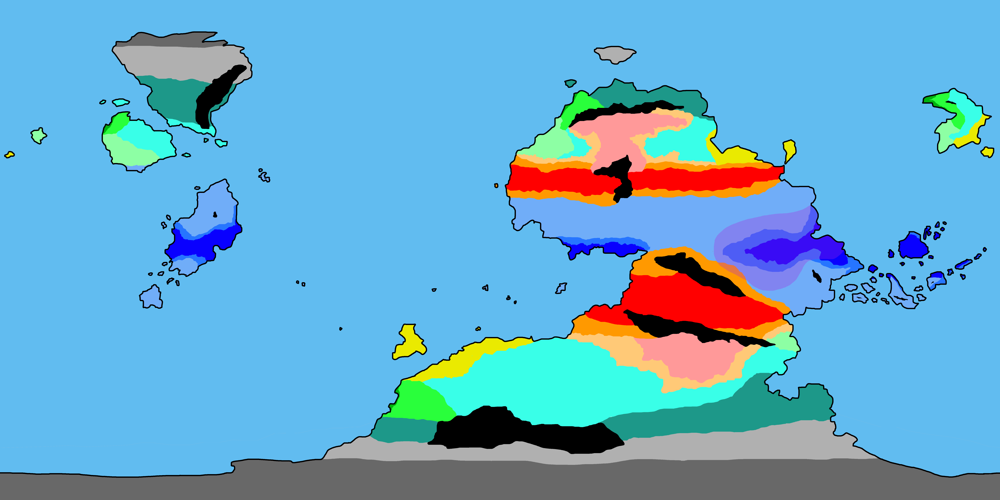
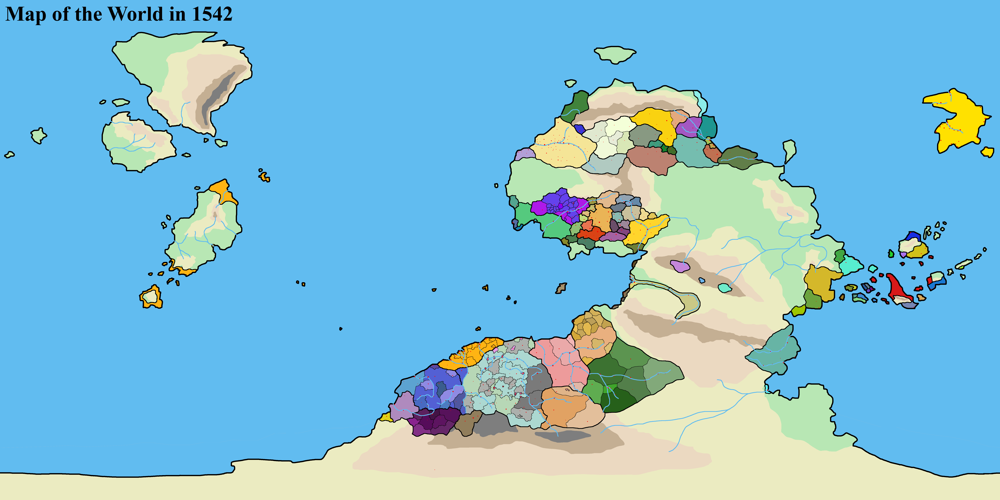
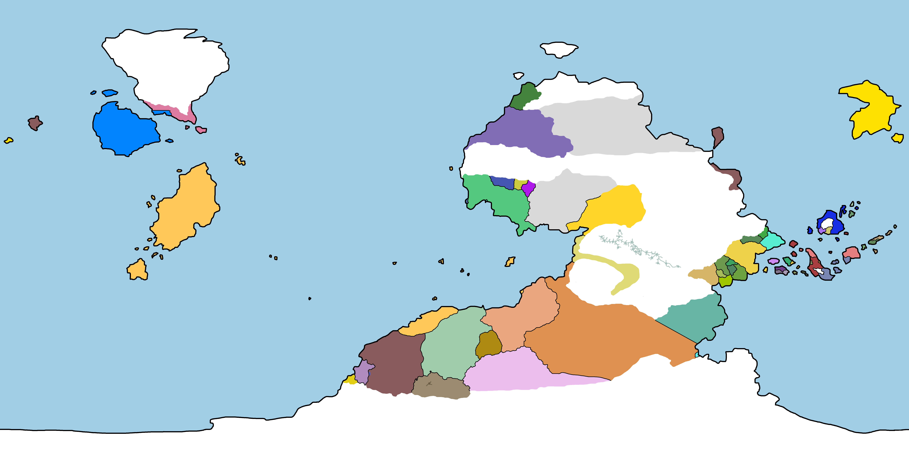
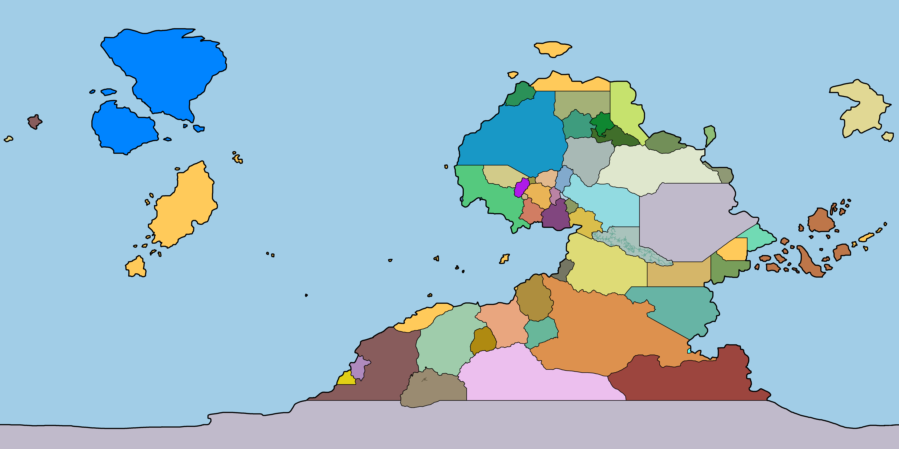
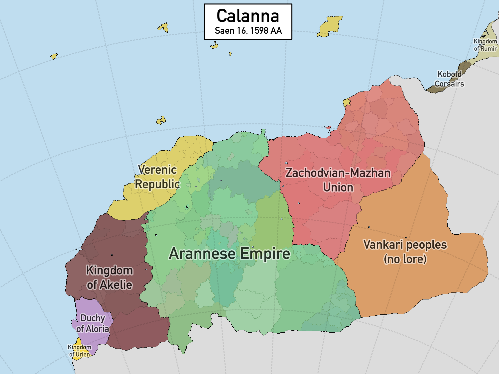
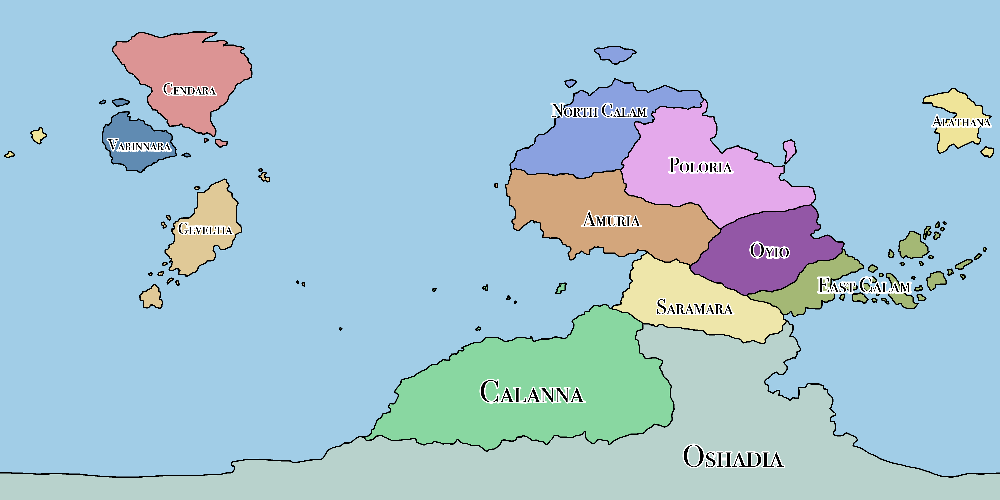

my post-post-apocalyptic earth worldbuilding project. half of the planet has become uninhabitable and the other half is squabbling about how to not have that keep happening.
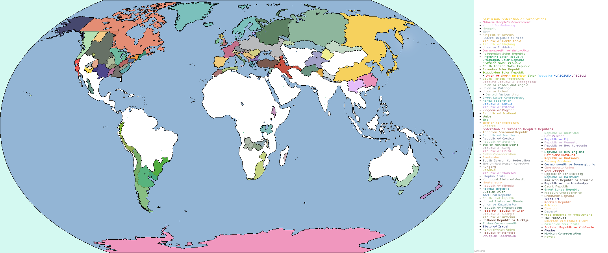
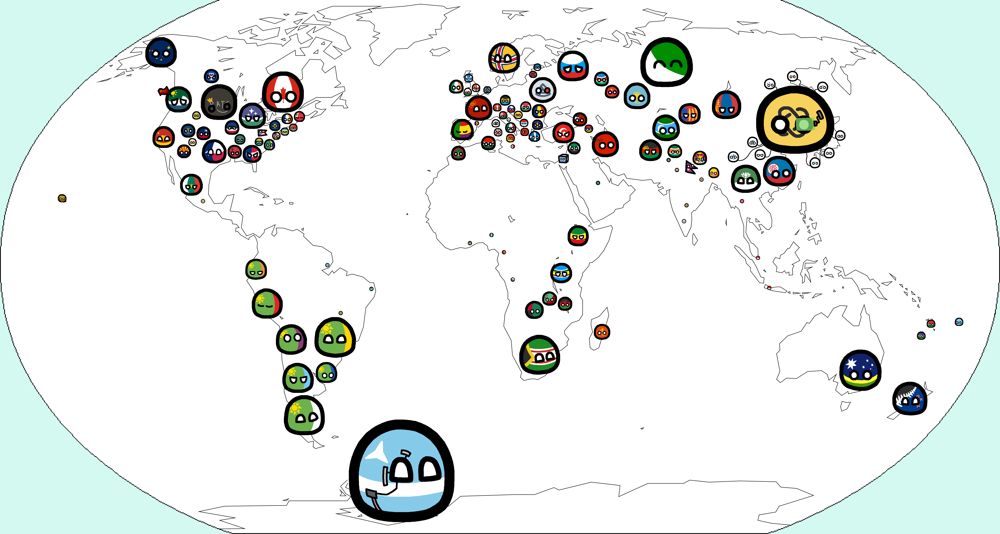
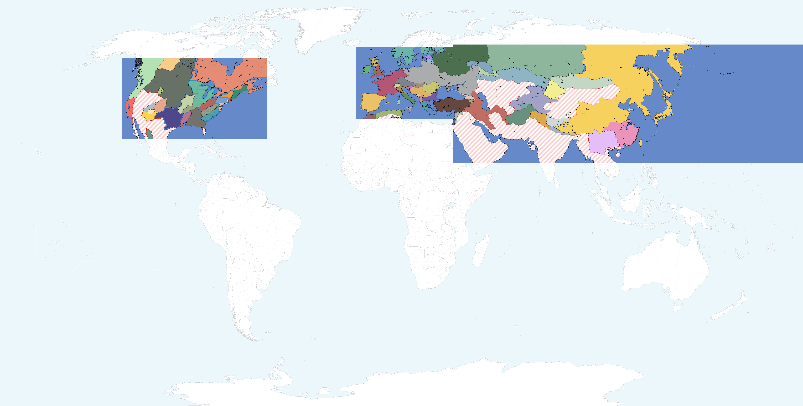
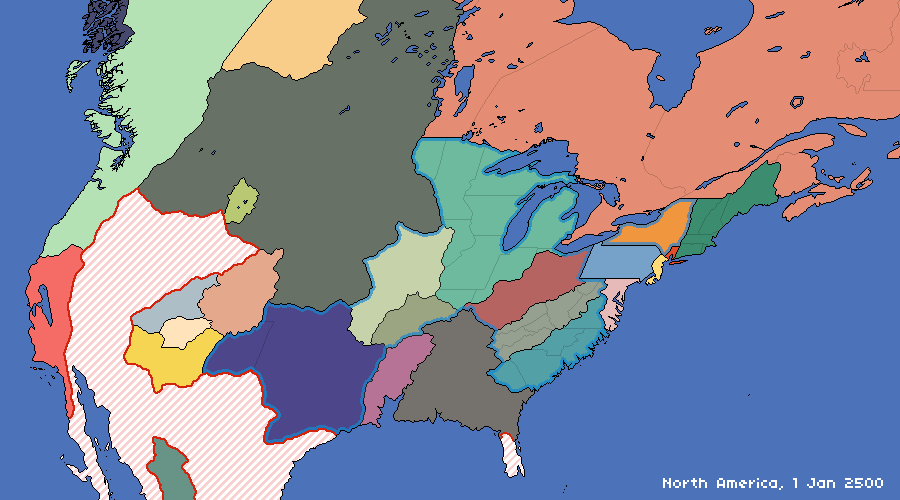
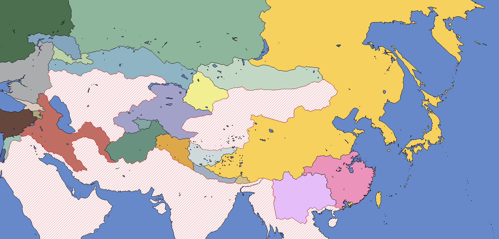
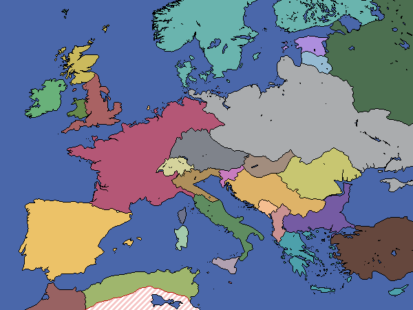
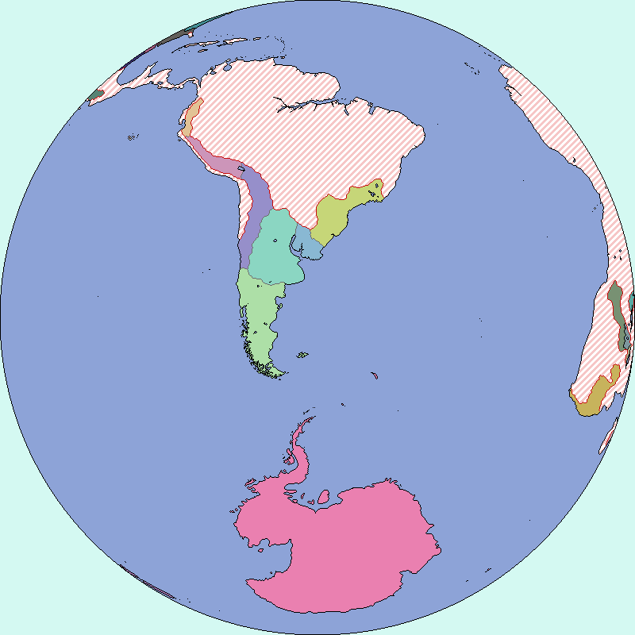

i tried to make a speculative evolution project but ended up never finishing anything more than making the planet and half a drawing.

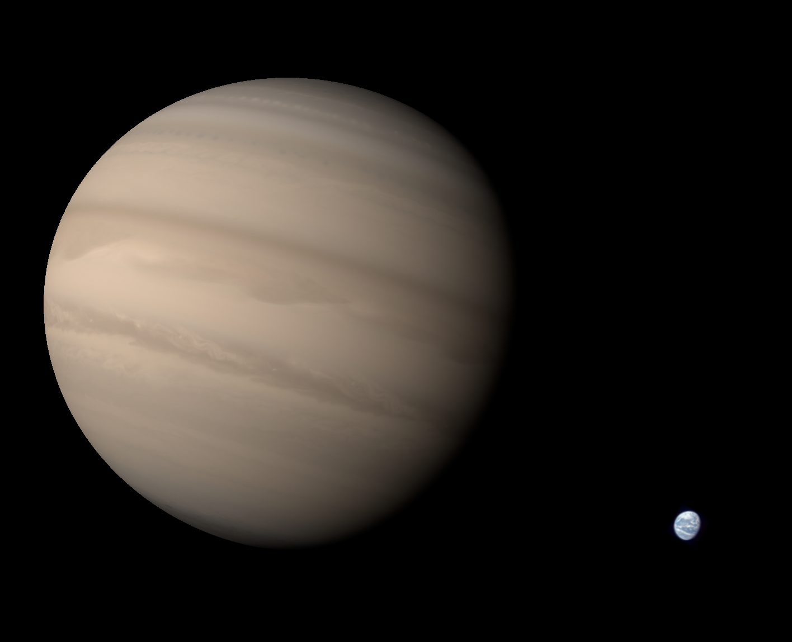


Published print can be found here: https://doi.org/10.1016/j.jnt.2026.03.006
← back to cva game i made a long time ago about geography.